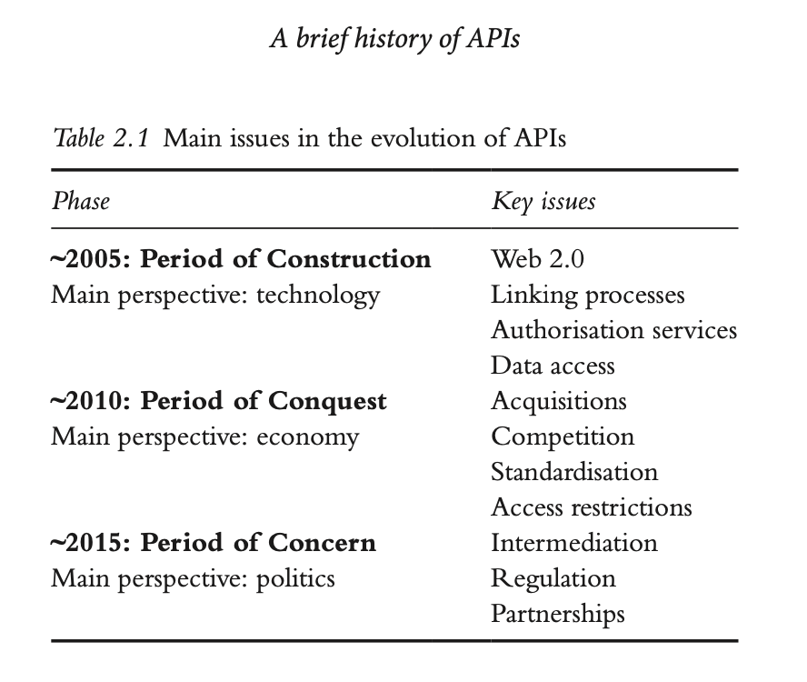

So far in class we have briefly mentioned APIs (for example, the Spotify API), but haven’t yet discussed what they are or how to use them. This week we will start to work through the basics of using APIs to get data from the web.
What is an API?
API stands for Application Programming Interface, but what does that mean exactly?
An application programming interface is a connection between computers or between computer programs. It is a type of software interface, offering a service to other pieces of software. A document or standard that describes how to build or use such a connection or interface is called an API specification.
But while that is technically correct, it probably leaves you with more questions than answers.
What is an API?
API Workflow
Origins of APIs
Salesforce API
Web 2.0
Web 2.0
History of APIs

From the chapter “A Brief History of APIs” by Jakob Jünger
Post-API Age & The End of the Social Web
Tweetdeck Interface
Many Users of APIs
API Users from Amelia Acker and Adam Kreisberg’s article “Social Media Data Archives in an API-Driven World”
Working with APIs
LOTR API
The One API
If we go to the about page https://the-one-api.dev/about, we can learn that the project was created in 2019 by Ulrike Exner and Mateusz Kikmunter, who are both developers.
In your is310-coding-assingments, create a new folder called api-getting-data and then create a new script called first_api_script.py. In this script, import the requests library and then create a variable called url that is the base url for the LOTR API.
Hopefully we are all seeing 200 responses, but if you are seeing a 404 or 403 response, you might need to authenticate with the API. We will discuss this more in the next section, but for now, let’s try to print out the response.
Getting JSON
In our web scraping lesson, we used the .text method to print out the response, but for APIs, we often use the .json() method. Let’s try that out.
Based on this data, we can see that The One API has returned data about the three books in the Lord of the Rings series. Each book has an _id and a name. The books themselves are returned in a list for the key docs, and then there are some other keys that provide information about the data that was returned, including total, limit, offset, page, and pages. Total tells us how many items were returned, limit tells us how many items could be returned per page, offset tells us where in the data we are (similar to indexing), page tells us what page we are on, and pages tells us how many pages of data there are.
This should return a 401 status code, which means that we are not authorized to access this data. This is because the LOTR API requires us to authenticate before we can access data about characters or quotes. This is a common feature of APIs, as it allows the API to track who is accessing their data and to limit access to certain users.
Now that we have our api key stored securely, let’s try to get data about characters from The One API. We can do this by updating our url variable to include the /character endpoint.
Since the api response is in json format, we can work with it similar to working with a dictionary. For example, we can see all the keys in the response by using the .keys() method.
We can access the total key to see how many characters are in the database.
response.json()['total']
This should return 933, which means that there are 933 characters in the database. We can also loop through the docs key to see each character.
for character in response.json()['docs']:print(character)
Processing JSON With Python
So if we only wanted to see the data about a certain character, like Galadriel, we could loop through the characters and print out the data for Galadriel.
for character in response.json()['docs']:if character['name'] =='Galadriel':print(character)
While we can do this using Python, we could also change our URL to only get data about Galadriel. We can do this by adding a query parameter to our URL.
Returning to the API’s documentation https://the-one-api.dev/documentation#5, we can see that we can use query parameters for sorting, filtering, and pagination data from The One API.
url ='https://the-one-api.dev/v2/character?name!=Galadriel&race=Elf'response = requests.get(url, headers=authorization_headers)print(f"Total number of elves besides Galadriel: {response.json()['total']}")
Query Parameters
Finally, we can also use the id in each data returned from the API to get more specific data. For example, if we wanted to get data about all the movie quotes of Galadriel, we could first get the id of Galadriel and then use that id to get data about her quotes.
So far we have been using the requests library to make our API calls, which is usually how you should work with APIs. However, occasionally, developers will create Python libraries to work with APIs, which can make working with APIs easier. These libraries are called API wrappers, and they are essentially Python libraries that provide a set of functions to work with an API.
NRH-LOTR
Indeed, a developer named Nathanial Hapeman has created one for The One API, which you can see here https://pypi.org/project/nrh-lotr/0.0.3/. If you want to try out this library, all you have to do is type pip install nrh-lotr==0.0.3 in your terminal.
LOTR Library
NRH-LOTR Structure
We can also see how the library is organized if we inspect it after installing it:
LOTR Library
NRH-LOTR Structure
And you can see how’s it making requests to the API by looking at the source code.
LOTR Library Source
Fixing the Source Code
In our class on Thursday, we ran into an issue with installing and using the nrh-lotr library, with this issue appearing in the terminal:
What Went Wrong?
Pydantic is a data validation library that checks whether the data you receive from an API matches the types you declared in your model. When the API returned a value for rottenTomatoesScore of 66.33333333 (a decimal), but the model was expecting an int (whole number), Pydantic rejected it. You can’t fit a float into an integer without losing information, so Pydantic threw a validation error.
The Fix
The library developer assumed Rotten Tomatoes scores would be integers, but the actual API returns percentage scores with decimal values. The solution was simple: change the type annotation from int to float to allow decimal numbers:
class Movie(pydantic.BaseModel):"""A LotR movie title."""id: str= pydantic.Field(None, alias="_id") name: str runtimeInMinutes: int budgetInMillions: int boxOfficeRevenueInMillions: float# Changed from int to float academyAwardNominations: int academyAwardWins: int rottenTomatoesScore: float# Changed from int to float
Using NRH-LOTR
# First grab an api key from: https://the-one-api.dev/documentation#3# Then put it in an env var like: `export API_KEY=SOME_API_KEY`# Or insert it directly into the LOTR class as depicted belowfrom lotr import LOTR, Movie, Quote# Movie basics.lotr = LOTR("YOUR_API_KEY")# lotr = LOTR() # if using env varmovies = lotr.movies(limit=5)
Using NRH-LOTR
However, if you scroll down further in the documentation, you’ll notice that this library only makes requests for the following endpoints:
Such limited functionality means that we couldn’t use this library to get data about characters or books, which is a major limitation. These types of limitations are common when working with API wrappers, as they are often created by developers who are not affiliated with the API itself and who may not have the time or resources to create a full-featured library.
import pyeuropeana.apis as apisimport pyeuropeana.utils as utils# use this function to search our collectionsresult = apis.search( query ='*', qf ='(skos_concept:"http://data.europeana.eu/concept/base/48" AND TYPE:IMAGE)', reusability ='open AND permission', media =True, thumbnail =True, landingpage =True, colourpalette ='#0000FF', theme ='photography', sort ='europeana_id', profile ='rich', rows =1000, ) # this gives you full response metadata along with cultural heritage object metadata# use this utility function to transform a subset of the cultural heritage object metadata# into a readable Pandas DataFramedataframe = utils.search2df(result)
pyeuropeana Functionality
Let’s try a simpler example first though:
import pyeuropeana.apis as apisresponse = apis.search(query="Galadriel")print(response)
According to this tutorial, we can use the entity.suggest method to get suggestions for a specific entity. For example, if we wanted to get suggestions for the entity Galadriel, we could use the following code:
response = apis.entity.suggest( text ='Galadriel', TYPE ='agent',)print(response)
Did it work?
pyeuropeana Entity API
Likely see there’s no results for this query. We could try a different entity, like Tolkien, and see if we get any results.
response apis.entity.suggest( text ='Tolkien', TYPE ='agent',)print(response)
We could also look for concepts or places, like Literature or London, to see what results we get. However, to do that we need to change the TYPE parameter to concept or place.
response_concept = apis.entity.suggest( text ='Literature', TYPE ='concept',)response_place = apis.entity.suggest( text ='London', TYPE ='place',)